Requirement already satisfied: yfinance in .\mon_env\lib\site-packages (0.2.35)
Requirement already satisfied: pandas>=1.3.0 in .\mon_env\lib\site-packages (from yfinance) (2.1.4)
Requirement already satisfied: numpy>=1.16.5 in .\mon_env\lib\site-packages (from yfinance) (1.26.3)
Requirement already satisfied: requests>=2.31 in .\mon_env\lib\site-packages (from yfinance) (2.31.0)
Requirement already satisfied: multitasking>=0.0.7 in .\mon_env\lib\site-packages (from yfinance) (0.0.11)
Requirement already satisfied: lxml>=4.9.1 in .\mon_env\lib\site-packages (from yfinance) (5.1.0)
Requirement already satisfied: appdirs>=1.4.4 in .\mon_env\lib\site-packages (from yfinance) (1.4.4)
Requirement already satisfied: pytz>=2022.5 in .\mon_env\lib\site-packages (from yfinance) (2023.3.post1)
Requirement already satisfied: frozendict>=2.3.4 in .\mon_env\lib\site-packages (from yfinance) (2.4.0)
Requirement already satisfied: peewee>=3.16.2 in .\mon_env\lib\site-packages (from yfinance) (3.17.0)
Requirement already satisfied: beautifulsoup4>=4.11.1 in .\mon_env\lib\site-packages (from yfinance) (4.12.2)
Requirement already satisfied: html5lib>=1.1 in .\mon_env\lib\site-packages (from yfinance) (1.1)
Requirement already satisfied: soupsieve>1.2 in .\mon_env\lib\site-packages (from beautifulsoup4>=4.11.1->yfinance) (2.5)
Requirement already satisfied: six>=1.9 in .\mon_env\lib\site-packages (from html5lib>=1.1->yfinance) (1.16.0)
Requirement already satisfied: webencodings in .\mon_env\lib\site-packages (from html5lib>=1.1->yfinance) (0.5.1)
Requirement already satisfied: python-dateutil>=2.8.2 in .\mon_env\lib\site-packages (from pandas>=1.3.0->yfinance) (2.8.2)
Requirement already satisfied: tzdata>=2022.1 in .\mon_env\lib\site-packages (from pandas>=1.3.0->yfinance) (2023.4)
Requirement already satisfied: charset-normalizer<4,>=2 in .\mon_env\lib\site-packages (from requests>=2.31->yfinance) (3.3.2)
Requirement already satisfied: idna<4,>=2.5 in .\mon_env\lib\site-packages (from requests>=2.31->yfinance) (3.6)
Requirement already satisfied: urllib3<3,>=1.21.1 in .\mon_env\lib\site-packages (from requests>=2.31->yfinance) (2.1.0)
Requirement already satisfied: certifi>=2017.4.17 in .\mon_env\lib\site-packages (from requests>=2.31->yfinance) (2023.11.17)
import pandas as pdimport numpy as npimport seaborn as snsimport mathimport matplotlib.pyplot as pltimport warningswarnings.filterwarnings('ignore')np.random.seed(42)
import yfinance as yfimport pandas as pdimport numpy as npimport matplotlib.pyplot as plt# Télécharger les données historiques du CAC 40cac_40 = yf.Ticker("^FCHI")data = cac_40.history("max")# Formater l'index en année-mois-jourdata.index = data.index.strftime('%Y-%m-%d')ts_data = datats_data
Open
High
Low
Close
Volume
Dividends
Stock Splits
Date
1990-03-01
1836.000000
1838.000000
1827.000000
1832.000000
0
0.0
0.0
1990-03-02
1831.000000
1860.000000
1831.000000
1860.000000
0
0.0
0.0
1990-03-05
1866.000000
1874.000000
1862.000000
1874.000000
0
0.0
0.0
1990-03-06
1869.000000
1875.000000
1866.000000
1872.000000
0
0.0
0.0
1990-03-07
1874.000000
1881.000000
1874.000000
1880.000000
0
0.0
0.0
...
...
...
...
...
...
...
...
2024-02-05
7591.770020
7606.120117
7558.229980
7589.959961
51727200
0.0
0.0
2024-02-06
7634.189941
7641.629883
7592.089844
7638.970215
56890100
0.0
0.0
2024-02-07
7632.839844
7652.850098
7610.180176
7611.259766
62951100
0.0
0.0
2024-02-08
7628.600098
7685.459961
7607.459961
7665.629883
76648600
0.0
0.0
2024-02-09
7652.450195
7668.189941
7617.740234
7647.520020
65846200
0.0
0.0
8619 rows × 7 columns
Mise en forme et nettoyage des données
ts_close = ts_data[[ 'Close']]
### Visualisation des valuers manquantes print(f"Y'a t-il des valeurs manquantes ? {any(pd.isna(ts_close['Close']))}")ts_close[pd.isna(ts_close['Close'])]
Y'a t-il des valeurs manquantes ? False
Close
Date
Nous n’avons aucune valeur manquante dans nos données
Le graphique ci-dessus représente la série des cours et la série des log rendements du CAC40 en fonction de la date. La série des cours est assez volatile et a une tendance à la hausse non-linéaire. Il semble qu’elle ne soit pas stationnaire. Nous vérfierons cela ultérieurement par le test de Dickey-Fuller. Cependant, la série des log rendements à une tendance constante et semble être stationnaire. Nous vérifierons cela également à travers les fonctions d’autocorrélation et d’autocorrélation partielle et par le test de Dickey-Fuller.
Fonction d’autocorrélation et d’autocorrélation partielle de la série des log rendements
Comme nous pouvons le voir sur les graphiques ci-dessus, l’autocorrélation et l’autocorrélation partielle des log rendements sont très faibles. Cela signifie que les log rendements sont stationnaires. Nous vérifierons cela à travers le test de Dickey-Fuller.
Etude de la stationnarité
## Test de dickey fullerfrom statsmodels.tsa.stattools import adfulleradf_result = adfuller(ts_close['log_return'].dropna(), regression='ct')print(f"ADF Statistic: {adf_result[0]}"andf"p-value: {adf_result[1]}")
p-value: 0.0
La pvalue étant nulle, on rejette l’hypothèse nulle de présence d’une racine unitaire. La série des log rendements est donc stationnaire. Par conséquent, nous travaillerons avec cette série pour modéliser la VaR à horizon 1 jour.
Découpage train test
# Nous considérons 75% de nos données dans l'échantillon d'apprentissage et 25% dans l'échantillon de testtrain_size =int(len(ts_close)*0.75)test_size =len(ts_close)-train_sizetrain_close = ts_close.iloc[0:train_size,:].dropna()test_close = ts_close.iloc[train_size:len(ts_close),:]print("Taille de l'ensemble d'apprentissage :", len(train_close))print("Taille de l'ensemble de test :", len(test_close))pd.isna(train_close).sum()
Taille de l'ensemble d'apprentissage : 6463
Taille de l'ensemble de test : 2155
Close 0
log_return 0
dtype: int64
Statistiques descriptives des rendements
train_close['log_return'].describe()
count 6463.000000
mean 0.000141
std 0.014046
min -0.094715
25% -0.007011
50% 0.000366
75% 0.007716
max 0.105946
Name: log_return, dtype: float64
test_close['log_return'].describe()
count 2155.000000
mean 0.000241
std 0.011963
min -0.130983
25% -0.004868
50% 0.000643
75% 0.006041
max 0.080561
Name: log_return, dtype: float64
Sur les deux jeux de données les log rendements sont relativement volatiles avec une dispersion plus importante pour la base d’apprentissage que pour la base de test. On remarque par ailleurs que le min est plus petit et le max plus grand dans la base d’apprentissage que dans la base de test. Nous pouvions nous y attendre car la base d’apprentissage couvre une période plus longue. Les deux séries sont malgré tout assez semblables en terme de moyenne avec une moyenne d’environ 0.015%.
Modélisation de la VaR.
La var est définie comme la perte potentielle maximale que peut subir un portefeuille sur un horizon avec un certain niveau de confiance. Dans ce notebook, nous adopterons une vision rentabilité. Dans ce cas, nous allons modéliser : \(P[R<VaR_h] =1- \alpha\).
Nous allons appliquer les différentes méthodes de modélisation de la Var:
- Méthodes non-paramétriques
- VaR historique
- VaR bootstrap
- Méthodes paramétriques
- VaR gaussienne
- VaR skew student
- VaR TVE (Théorie des valeurs extrêmes)
- VaR AR-GARCH
VaR non paramétrique
VaR historique :
Ici on estime la distribution des rendements R par la fonction de répartition empirique du vecteur d’observations. La VaR est alors donnée par le quantile empirique d’ordre \(1-\alpha\) :
\(\hat{VaR}_h(\alpha) = \hat{F_n^{-1}}(1-\alpha)\) avec \(\hat{F_n}(1-\alpha)= \frac{1}{n} \sum_{i=1}^{n} 1_{R_i \leq (1-\alpha)}\)
Nous utiliserons ainsi la fonction numpy.percentile pour calculer la VaR historique.
def hist_var(returns, index, fenetre, seuil):"""Cette fonction calcule la Value at Risk (VaR) historique d'une série temporelle de log rendements Args: returns (numpy_array ): serie de log rendements index (int): indice maximal de la série à considérer pour le calcul fenetre (int): nombre de jours sur lesquels on calcule la VaR seuil (float): niveau de confiance de la VaR Return: float: VaR historique """return np.percentile(returns[index-fenetre:index], 100*(1-seuil))
var_hist= hist_var(train_close["log_return"], train_size, 251*10, 0.99) #on utilise 10 ans comme fenêtreprint(var_hist)
-0.04320825141346711
Backtesting
plt.figure(figsize=(12, 8))plt.plot(ts_close.index[0:train_size], train_close['log_return'], label="historical train log returns", color ='gray')plt.axvline(x = ts_close.index[train_size-251*10-1], color='green', linestyle='-', label='Limite de données pour le calcul de la VaR')plt.plot(ts_close.index[train_size:], test_close['log_return'], label="historical test log returns", color ='blue')plt.plot(ts_close.index[train_size:], [var_hist for i inrange(test_size)], label="Non parametric VaR", color ='red')list_exceptions_np = [i for i inrange(len(test_close['log_return'])) if test_close['log_return'][i]<var_hist]plt.scatter(test_close.index[list_exceptions_np], test_close['log_return'][list_exceptions_np], color='red', label='Exceptions')plt.title('CAC40')plt.ylabel('Values')plt.plot()plt.legend()plt.show()
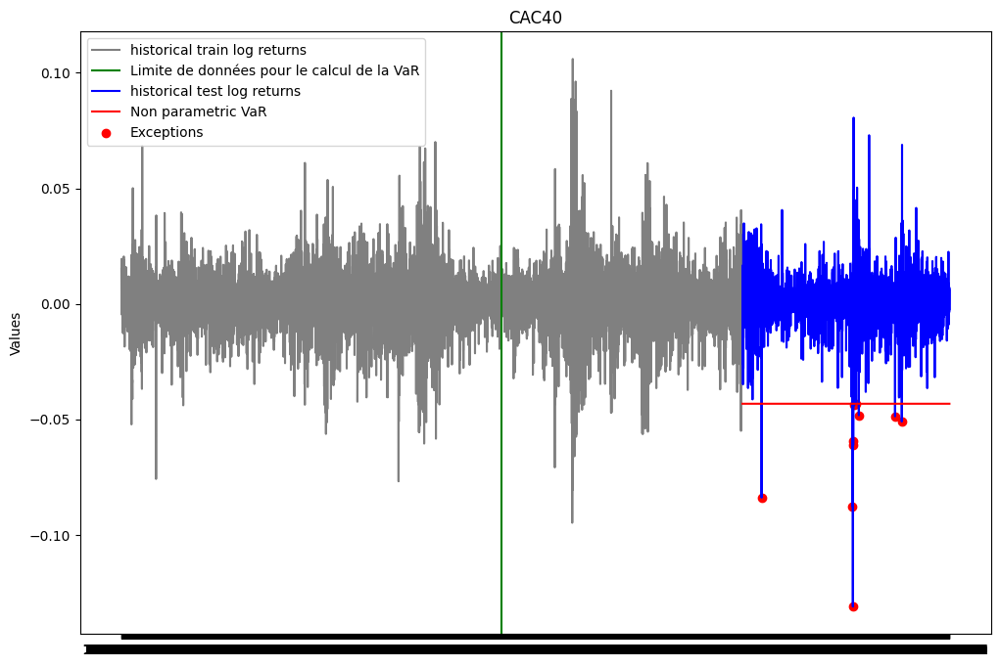
print(f"Le nombre d'exceptions pour la VaR non paramétrique est: {len(list_exceptions_np)}")print(f"Le pourcentage d'exceptions pour la VaR non paramétrique est: {len(list_exceptions_np)/test_size}")
Le nombre d'exceptions pour la VaR non paramétrique est: 10
Le pourcentage d'exceptions pour la VaR non paramétrique est: 0.004640371229698376
Nous allons maintenant vérifier si la probabilité d’exception est statiquement égale à \(\alpha\).
from scipy import statstest_except_np = stats.binomtest(len(list_exceptions_np), test_size, p =0.01)print(f'la p-value du test binomial est: {test_except_np.pvalue}')
la p-value du test binomial est: 0.008950138322753154
La pvalue du test est inférieure au seuil de 5%. On rejette donc l’hypothèse nulle selon laquelle la probabilité d’exception est de 1%. Nous concluons donc que notre VaR n’est pas satisfaisante.
ES_np = np.mean([r for r in train_close['log_return'] if r<var_hist])print(f"L'Expected Shortfall associée à la VaR calculée est: {ES_np}")
L'Expected Shortfall associée à la VaR calculée est: -0.054387464763168906
VaR historique Bootstrap
Pour la VaR historique boostrap, nous allons construire B réplications bootstrap de la série des log rendements. Pour chaque réplication(b), nous allons calculer la VaR historique. La VaR historique bootstrap est alors donnée par la moyenne des VaR historiques des B réplications bootstrap.
Nous avons aussi calculé l’intervalle de confiance à 95% de la VaR historique bootstrap. Cet intervalle est donné par les quantiles empiriques d’ordre 2.5% et 97.5% des VaR historiques des B réplications bootstrap.
def VaR_Hist_Bootstrap(returns, seuil, num_simulations, alpha_IC, n_B): VaRs_boot = np.zeros(num_simulations)for i inrange(num_simulations): sample = np.random.choice(returns, n_B, replace=True) VaRs_boot[i] = hist_var(sample, len(sample), len(sample), seuil) VaR = np.mean(VaRs_boot) lower_bound = np.percentile(VaRs_boot, 100* (1-alpha_IC) /2) upper_bound = np.percentile(VaRs_boot, 100* (1- (1-alpha_IC) /2)) IC = (lower_bound, upper_bound)return VaR, IC
seuil =0.99seuil_IC =0.9num_simulations =5000n_B =251*10#on utilise 10 ans de données comme taille d'échantillons bootstrapvar_hist_boot, IC_hist_boot = VaR_Hist_Bootstrap(train_close["log_return"], seuil, num_simulations, seuil_IC, n_B) print(f"La VaR historique bootstrap: {var_hist_boot}")print(f"L'intervalle de confiance associé est: {IC_hist_boot}")
La VaR historique bootstrap: -0.039930947829674754
L'intervalle de confiance associé est: (-0.043415059657731805, -0.03610734170316266)
Notre estimation bootstrap de la VaR se trouve bien dans l’intervalle de confiance à 90%. Nous pouvons donc conclure que notre estimation de la VaR est satisfaisante.
plt.figure(figsize=(12, 8))plt.plot(ts_close.index[0:train_size], train_close['log_return'], label="historical train log returns", color ='gray')plt.plot(ts_close.index[train_size:], test_close['log_return'], label="historical test log returns", color ='blue')plt.plot(ts_close.index[train_size:], [var_hist_boot for i inrange(test_size)], label="Non parametric Bootstrap VaR", color ='red')list_exceptions_np_boot = [i for i inrange(len(test_close['log_return'])) if test_close['log_return'][i]<var_hist_boot]plt.scatter(test_close.index[list_exceptions_np_boot], test_close['log_return'][list_exceptions_np_boot], color='red', label='Exceptions')plt.title('CAC40')plt.ylabel('Values')plt.plot()plt.legend()plt.show()
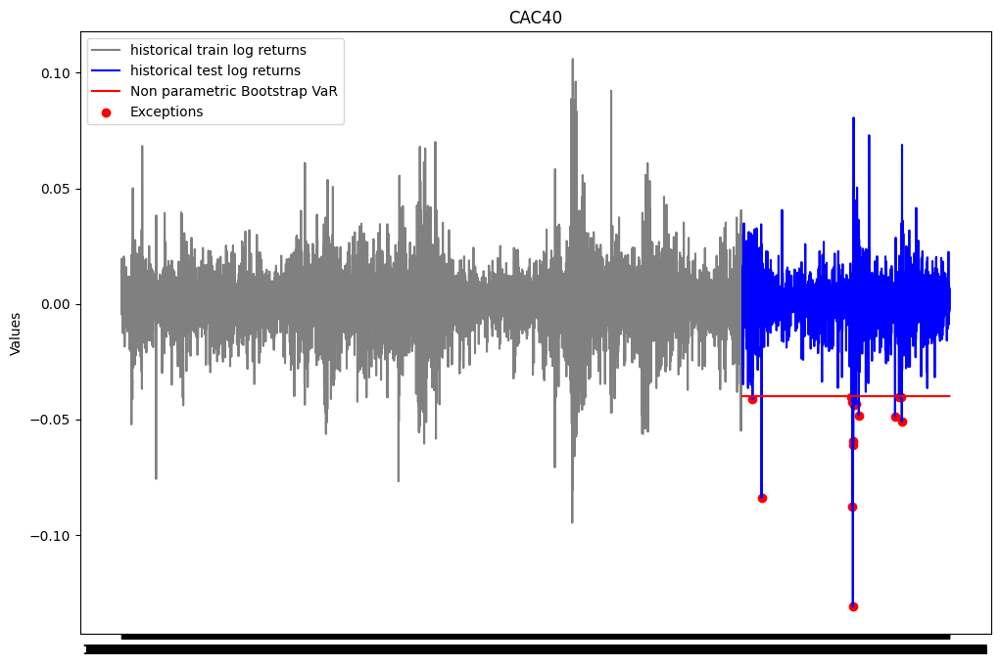
print(f"Le nombre d'exceptions pour la VaR Bootstrap non paramétrique est: {len(list_exceptions_np_boot)}")print(f"Le pourcentage d'exceptions pour la VaR Bootstrap non paramétrique est: {len(list_exceptions_np_boot)/test_size}")
Le nombre d'exceptions pour la VaR Bootstrap non paramétrique est: 16
Le pourcentage d'exceptions pour la VaR Bootstrap non paramétrique est: 0.007424593967517401
ES_np = np.mean([r for r in train_close['log_return'] if r<var_hist_boot])print(f"L'Expected Shortfall associée à la VaR calculée est: {ES_np}")
L'Expected Shortfall associée à la VaR calculée est: -0.05028777316523479
Méthodes paramétriques d’estimation de la VaR
VaR gaussienne
La VaR gaussienne suppose que les rendements suivent une loi normale. Dans ce cas, on a \(P(R<VaR_h(\alpha)) = 1-\alpha\) qui est équivalent à \(P(\frac{R-\mu}{\sigma} < \frac{VaR_h(\alpha)-\mu}{\sigma}) = 1-\alpha\) en supposant que R suit une loi normale de moyenne \(\mu\) et d’écart type \(\sigma\). On a alors \(VaR_h(\alpha) = \mu + \sigma \Phi^{-1}(1-\alpha)\). On peut estimer les paramètres à partir de l’échantillon. On a alors \(\hat{VaR}_h(\alpha) = \hat{\mu} + \hat{\sigma} \Phi^{-1}(1-\alpha)\).
from scipy import statsdef var_gaussienne(returns, index, fenetre, seuil): rendements = returns[index-fenetre:index] mean_returns = np.mean(rendements) sd_returns = np.std(rendements) VaR = mean_returns + sd_returns * stats.norm.ppf(1-seuil)return VaR
## VaR gaussienne sur base d'apprentissagevar_gaus = var_gaussienne(train_close["log_return"], train_size, 251*10, 0.99) #on utilise 10 ans comme fenêtreprint(var_gaus)
Nous constatons que lorsqu’on utilise la loi normale pour la modélisation de la VaR, au niveau des queues de distribution,les quantiles théoriques sont moins élévés que les quantiles empiriques à gauche et plus élevés à droite. Cela signifie que la loi normale sous-estime la probabilité d’exception. Nous pouvons donc conclure que la loi normale n’est pas adaptée pour modéliser la VaR.
## Test d'adéquation# Test de Kolmogorov-Smirnovks_statistic, ks_p_value = stats.kstest(train_close["log_return"], 'norm', args = (np.mean(train_close["log_return"]), np.std(train_close["log_return"])))print(f"Test de Kolmogorov-Smirnov - Statistique : {ks_statistic},\nP-value : {ks_p_value}")
Test de Kolmogorov-Smirnov - Statistique : 0.05681055751622879,
P-value : 1.4266789934088429e-18
On rejette l’hypothèse nulle selon laquelle les log rendements suivent une distribution normale.
Représentation graphique
plt.figure(figsize=(12, 8))plt.plot(ts_close.index[0:train_size], train_close['log_return'], label="historical train log returns", color ='gray')plt.axvline(x = ts_close.index[train_size-251*10-1], color='green', linestyle='-', label='Limite de données pour le calcul de la VaR')plt.plot(ts_close.index[train_size:], test_close['log_return'], label="historical test log returns", color ='blue')plt.plot(ts_close.index[train_size:], [var_gaus for i inrange(test_size)], label="gaussian VaR", color ='red')list_exceptions_gaus = [i for i inrange(len(test_close['log_return'])) if test_close['log_return'][i]<var_gaus]plt.scatter(test_close.index[list_exceptions_gaus], test_close['log_return'][list_exceptions_gaus], color='red', label='Exceptions')plt.title('CAC40')plt.ylabel('Values')plt.plot()plt.legend()plt.show()
Analyse des exceptions
print(f"Le nombre d'exceptions pour la VaR gaussienne est: {len(list_exceptions_gaus)}")print(f"Le pourcentage d'exceptions pour la VaR gaussienne est: {len(list_exceptions_gaus)/test_size}")
Le nombre d'exceptions pour la VaR gaussienne est: 25
Le pourcentage d'exceptions pour la VaR gaussienne est: 0.01160092807424594
test_except_gaus = stats.binomtest(len(list_exceptions_gaus), test_size, p =0.01)print(f'la p-value du test binomial est: {test_except_gaus.pvalue}')
la p-value du test binomial est: 0.44697408691382107
La pvalue du test est supérieure au seuil de 5%. On ne peut donc pas rejeter l’hypothèse nulle selon laquelle la probabilité d’exception est de 1%. Nous concluons donc que notre VaR est satisfaisante.
VaR gaussienne à 10 jours
## Var gaussienne à 10 jours par la méthode de scalingperiode =10var_gaus_scaling = np.sqrt(periode)*var_gausprint(f"La VaR gaussienne à 10 jours par la méthode de scaling est: {var_gaus_scaling}")
La VaR gaussienne à 10 jours par la méthode de scaling est: -0.10983560318699723
## VaR gaussienne à 10 jours par la méthode de diffusionfrom numpy import randomperiode =10n_simul =10000S0 = train_close['Close'].iloc[-1]mean_returns = np.mean(train_close["log_return"])sd_returns = np.std(train_close["log_return"])simulations = []for k inrange(n_simul): simul_k=[S0]for _ inrange(periode): Z = random.standard_normal() dS = simul_k[-1]*mean_returns + simul_k[-1]*sd_returns*Z simul_k.append(simul_k[-1]+dS) simulations.append(simul_k)rend10 = [np.log(simul[10] / S0) for simul in simulations]alpha =0.99var_gaus_diff = np.percentile(rend10, 100*(1-alpha))print(f"La VaR gaussienne à 10 jours par la méthode de diffusion est: {var_gaus_diff}")
La VaR gaussienne à 10 jours par la méthode de diffusion est: -0.10286418206833377
VaR gaussienne pondérée :
Une façon de corriger la VaR, est de pondérer la moyenne et l’écart type des rendements. On peut utiliser une moyenne mobile pondérée.
from scipy import statsdef var_gaussienne_ewma(returns, index, fenetre, seuil, lambd): rendements = returns[index-fenetre:index] n =len(rendements) poids = [(lambd**i)*(1-lambd) for i inrange(n)] denom =sum(poids) poids_pond = [poid/denom for poid in poids] moy_pond = np.sum([poids_pond[i]*rendements[n-i-1] for i inrange(n)]) variance_pond = np.sum([poids_pond[i]*(rendements[n-i-1]-moy_pond)**2for i inrange(n)]) VaR = moy_pond + np.sqrt(variance_pond) * stats.norm.ppf(1-seuil)return moy_pond, variance_pond, VaR
## Calcul lambd1=0.9lambd2 =0.95lambd3 =0.99moy_pond1, variance_pond1, VaR1 = var_gaussienne_ewma(train_close["log_return"], train_size, 251*10, 0.99, lambd1)moy_pond2, variance_pond2, VaR2 = var_gaussienne_ewma(train_close["log_return"], train_size, 251*10, 0.99, lambd2)moy_pond3, variance_pond3, VaR3 = var_gaussienne_ewma(train_close["log_return"], train_size, 251*10, 0.99, lambd3)list_exceptions_gaus1 = [i for i inrange(len(test_close['log_return'])) if test_close['log_return'][i]<VaR1]#print(100*"_"+ f"\nlambda = {lambd1}\nMoyenne pondérée: {moy_pond1}\nVariance pondérée: {variance_pond1}\nVaR gaussienne EWMA: {VaR1}\nNombre d'exceptions: {len(list_exceptions_gaus1)}\nPourcentage d'exceptions: {len(list_exceptions_gaus1)/test_size}")fig, axes = plt.subplots(1, 3, figsize=(15, 5))# Premier graphiqueaxes[0].plot(ts_close.index[0:train_size], train_close['log_return'], label="Historical train log returns", color='gray')axes[0].axvline(x=ts_close.index[train_size -251*10-1], color='green', linestyle='-', label='Limite de données pour le calcul de la VaR')axes[0].plot(ts_close.index[train_size:], test_close['log_return'], label="Historical test log returns", color='blue')axes[0].plot(ts_close.index[train_size:], [VaR1 for _ inrange(test_size)], label=f"Gaussian EWMA VaR (lambda= {lambd1})", color='red')axes[0].scatter(test_close.index[list_exceptions_gaus1], [test_close['log_return'][i] for i in list_exceptions_gaus1], color='red', label='Exceptions')axes[0].set_title('Lambda = 0.9')axes[0].legend()list_exceptions_gaus2 = [i for i inrange(len(test_close['log_return'])) if test_close['log_return'][i]<VaR2]#print(100*"_"+ f"\nlambda = {lambd2}\nMoyenne pondérée: {moy_pond2}\nVariance pondérée: {variance_pond2}\nVaR gaussienne EWMA: {VaR2}\nNombre d'exceptions: {len(list_exceptions_gaus2)}\nPourcentage d'exceptions: {len(list_exceptions_gaus2)/test_size}")# Deuxième graphiqueaxes[1].plot(ts_close.index[0:train_size], train_close['log_return'], label="Historical train log returns", color='gray')axes[1].axvline(x=ts_close.index[train_size -251*10-1], color='green', linestyle='-', label='Limite de données pour le calcul de la VaR')axes[1].plot(ts_close.index[train_size:], test_close['log_return'], label="Historical test log returns", color='blue')axes[1].plot(ts_close.index[train_size:], [VaR2 for _ inrange(test_size)], label=f"Gaussian EWMA VaR (lambda= {lambd2})", color='red')axes[1].scatter(test_close.index[list_exceptions_gaus2], [test_close['log_return'][i] for i in list_exceptions_gaus2], color='red', label='Exceptions')axes[1].set_title('Lambda = 0.95')axes[1].legend()list_exceptions_gaus3 = [i for i inrange(len(test_close['log_return'])) if test_close['log_return'][i]<VaR3]#print(100*"_"+ f"\nlambda = {lambd3}\nMoyenne pondérée: {moy_pond3}\nVariance pondérée: {variance_pond3}\nVaR gaussienne EWMA: {VaR3}\nNombre d'exceptions: {len(list_exceptions_gaus3)}\nPourcentage d'exceptions: {len(list_exceptions_gaus3)/test_size}")# Troisième graphiqueaxes[2].plot(ts_close.index[0:train_size], train_close['log_return'], label="Historical train log returns", color='gray')axes[2].axvline(x=ts_close.index[train_size -251*10-1], color='green', linestyle='-', label='Limite de données pour le calcul de la VaR')axes[2].plot(ts_close.index[train_size:], test_close['log_return'], label="Historical test log returns", color='blue')axes[2].plot(ts_close.index[train_size:], [VaR3 for _ inrange(test_size)], label=f"Gaussian EWMA VaR (lambda= {lambd3})", color='red')axes[2].scatter(test_close.index[list_exceptions_gaus3], [test_close['log_return'][i] for i in list_exceptions_gaus3], color='red', label='Exceptions')axes[2].set_title('Lambda = 0.99')axes[2].legend()plt.tight_layout()plt.show()
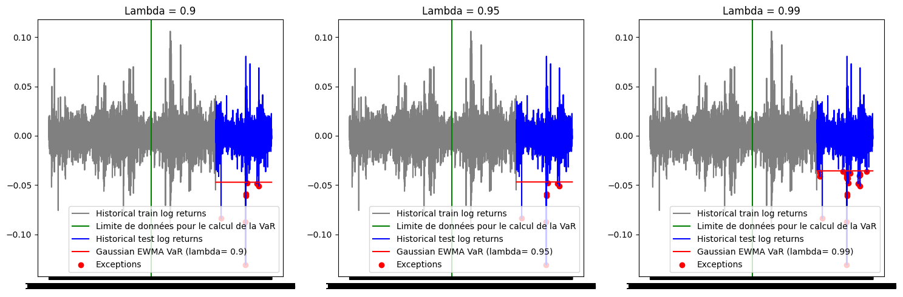
VaR dynamique :
Une autre façon de corriger la VaR est de la modéliser par un modèle dynamique. Ici on a pas besoin de diviser notre échantillon en base d’apprentissage et de test. Il suffit de choisir une fenêtre de temps pour estimer notre VaR. Ici nous allons choisir (251 jours) soit un an en considérant les jours ouvrés. Puis nous allons la faire glisser de 1 jour en 1 jour et la backtester le lendemain
La fonction hist_var écrite pour la VaR non paramétrique a été conçue pour pouvoir également calculer la VaR dynamique. Il suffit pour cela de faire varier l’index en paramètre.
vars_dyn =list(map(lambda index: hist_var(list(ts_close['log_return']), index, 251, 0.99), range(251, len(ts_close['log_return'])))) #on suppose qu'une année correspond à 251 jours ouvrés
Réprésentation graphique
plt.figure(figsize=(12, 8))plt.plot(ts_close.index, ts_close['log_return'], label="historical log returns", color ='blue')plt.plot(ts_close.index[251:], vars_dyn, label='VaR dynamique', color ='red')list_exceptions_dyn = [i for i inrange(251, len(ts_close['log_return'])) if ts_close['log_return'][i]<vars_dyn[i-251]]plt.scatter(ts_close.index[list_exceptions_dyn], ts_close['log_return'][list_exceptions_dyn], color='red', label='Exceptions')plt.title('CAC40')plt.ylabel('Values')plt.plot()plt.legend()plt.show()
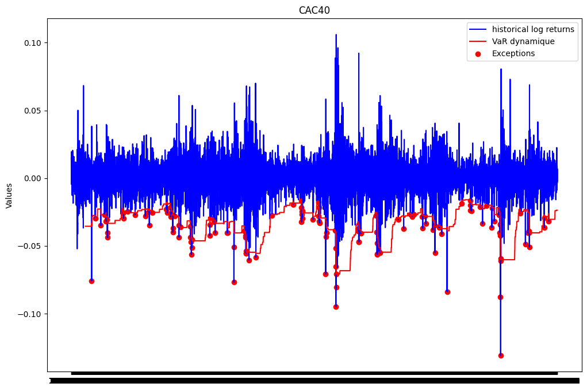
print(f"Le nombre d'exceptions pour la VaR dynamique est: {len(list_exceptions_dyn)}")print(f"Le pourcentage d'exceptions pour la VaR dynamique est: {len(list_exceptions_dyn)/len(vars_dyn)}")
Le nombre d'exceptions pour la VaR dynamique est: 133
Le pourcentage d'exceptions pour la VaR dynamique est: 0.015895781044579897
from scipy import statstest_except_dyn = stats.binomtest(len(list_exceptions_dyn), len(vars_dyn), p =0.01)print(f'la p-value du test binomial est: {test_except_dyn.pvalue}')
la p-value du test binomial est: 5.082684955881415e-07
La p-value du test binomial est en dessous du seuil de 5%. On rejette donc l’hypothèse selon laquelle la probabilité d’exception est de 1%. Le modèle VaR estimé n’est pas satisfaisant.
VaR skew-Student :
La loi student a pour avantage de prendre en compte les queues de distribution des rendements. Dans cette partie, nous allons supposer que les rendements suivent une loi skew-student généralisée. Nous allons estimer les paramètres de la loi skew-student à partir de la série des log rendements par maximum de vraisemblance. Enfin, nous allons calculer la VaR à partir des paramètres estimés.
fonction de densité de la skew-student
from scipy import special def SkStudentPdf(x:float, mu, sigma, gamma, nu): point = gamma*(x-mu)*np.sqrt((nu+1)/(((x-mu)/sigma)**2+nu))/sigmareturn2*stats.t.pdf(x, df = nu, loc = mu, scale=sigma)*stats.t.cdf(point, nu+1)
mu =-0.1sigma=0.1gamma =1nu =4SkStudentPdf(0.5, mu, sigma, gamma, nu)
0.022681128494391908
Fonction de log vraisemblance
def minus_log_vrais(params, returns): mu, sigma, gamma, nu = params densities_values = SkStudentPdf(returns, mu, sigma, gamma, nu) log_densities_values = [np.log(value) for value in densities_values]return-np.sum(log_densities_values)
fonction d’optimisation
# Fonction d'optimisation from scipy.optimize import minimizedef optim_func(data):# Estimer les paramètres par maximum de vraisemblance initial_guess = [np.mean(data), np.std(data), 1, 4] result = minimize(minus_log_vrais, initial_guess, args=(data,), method='Nelder-Mead')# Obtenez les paramètres estimés est_params = result.xreturn est_params
Estimation des paramètres sur base d’apprentissage
La valeur estimée des paramètres est:
mu: 0.002414916596402626
sigma: 0.010242362582207797
gamma: -0.23163817125525726
nu: 3.994213161152852
Le code ci-dessus a consisté à construire la densité de la skew-student, la fonction de la log vraisemblance et la fonction d’optimisation. Nous avons ensuite estimé les paramètres de la skew-student sur la base d’apprentissage. Nous pouvons évaluer la qualité de notre estimation par des analyses graphiques avant de passer à la modélisation de la VaR.
Comparaison entre densité théorique et densité empirique de la skew-student sur les log rendements
x_values = np.linspace(min(test_close['log_return']), max(test_close['log_return']), 1000)mu, sigma, skew, df =est_paramstheoretical_density = SkStudentPdf(x_values, mu, sigma, skew, df)plt.figure(figsize = (10,8))plt.hist(test_close['log_return'], bins=30, density=True, alpha=0.5, label='Données empiriques')plt.plot(x_values, theoretical_density, label='Densité Skew Student', color='red')# Personnalisation du graphiqueplt.xlabel('Rendements')plt.ylabel('Densité')plt.title('Comparaison entre les données et la densité théorique')plt.legend()# Affichage du graphiqueplt.show()
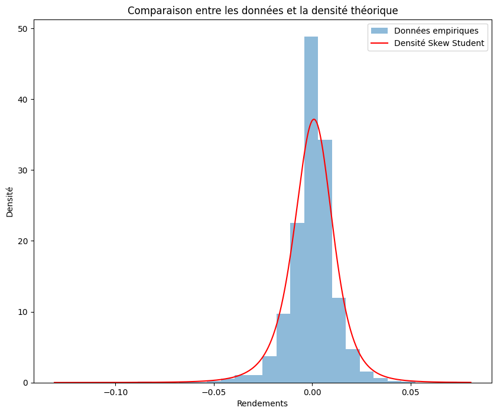
Le graphique ci-dessus est satisfaisant. La densité théorique de la skew-student est très proche de la densité empirique des log rendements. Nous pouvons donc conclure que la skew-student est une bonne modélisation des log rendements.
Fonction de repartition de la skew-student et fonction quantile
## Intégration de la fonction de densitéfrom scipy import integratefrom scipy.optimize import minimize_scalardef integrale_SkewStudent(x): borne_inf =-np.inf resultat_integration, erreur = integrate.quad(lambda x: SkStudentPdf(x, mu_est, sigma_est, gamma_est, nu_est), borne_inf, x)return resultat_integrationdef fonc_minimize(x, alpha): value = integrale_SkewStudent(x)-alphareturnabs(value)def theoretical_quantile(alpha):if alpha <0or alpha >1:raiseException("Veuillez entrer un niveau alpha entre 0 et 1")else: resultat_minimisation = minimize_scalar(lambda x: fonc_minimize(x, alpha))return resultat_minimisation.x
Le code ci-dessus nous a permis de construire la fonction de repartition de la skew-student ainsi que la fonction quantile qui est l’inverse de cette fonction de repartition. Cette fonction quantile est le coeur de la modélisation de la VaR.
QQ plot :
Le graphique de QQ plot nous permettra de discuter de la qualité d’ajustement de la loi skew-student à la série des log rendements.
niveaux_quantiles = np.arange(0.001, 1, 0.001)quantiles_empiriques = np.quantile(train_close['log_return'], niveaux_quantiles)quantiles_theoriques = [theoretical_quantile(alpha) for alpha in niveaux_quantiles]
Nous constatons que la loi skew-student est une bonne approximation de la distribution des log rendements. Même si on constate des écarts aux queues de distribution, la loi skew-student semble bien modéliser la distribution des log rendements.
comparaison entre loi gaussienne et loi de Skew Student
plt.figure(figsize=(12, 8))plt.subplot(1, 2, 1)probplot = stats.probplot(train_close["log_return"], sparams = (np.mean(train_close["log_return"]), np.std(train_close["log_return"])), dist='norm', plot=plt)plt.plot(probplot[0][0], probplot[0][0], color='red', linestyle='dashed', linewidth=2, label='Première bissectrice')plt.xlabel('Quantiles théoriques (distribution loi normale)')plt.ylabel('Quantiles empiriques')plt.title("QQ-plot d'une modélisation par loi normale")plt.grid(True)plt.subplot(1, 2, 2)plt.scatter(quantiles_theoriques, quantiles_empiriques)plt.plot(quantiles_theoriques, quantiles_theoriques, color='red', linestyle='dashed', linewidth=2, label='Première bissectrice')plt.title("QQ Plot d'une modélisation par loi Skew Student")plt.xlabel('Quantiles théoriques (distribution Skew Student)')plt.ylabel('Quantiles empiriques')plt.grid(True)plt.tight_layout()plt.show()
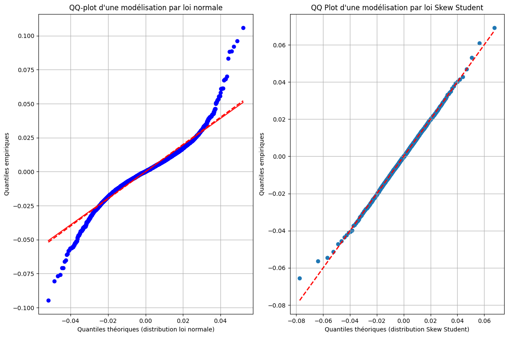
Comme on peut le voir sur le graphique ci-dessus, la loi skew-student est une meilleure approximation de la distribution des log rendements que la loi normale. En effet, les écarts aux queues de distribution sont moins importants pour la loi skew-student que pour la loi normale.
Calcul de la VaR Skew Student
def var_skewstudent(returns, index, fenetre, seuil): rendements = returns[index-fenetre:index] mean_returns = np.mean(rendements) sd_returns = np.std(rendements) VaR = theoretical_quantile(1-seuil)return VaR
## VaR Skew Student sur base d'apprentissagevar_skew = var_skewstudent(train_close["log_return"], train_size, train_size, 0.99) #on utilise 10 ans comme fenêtreprint(var_skew)
-0.039652480749928415
plt.figure(figsize=(12, 8))plt.plot(ts_close.index[0:train_size], train_close['log_return'], label="historical train log returns", color ='gray')plt.axvline(x = ts_close.index[train_size-251*10-1], color='green', linestyle='-', label='Limite de données pour le calcul de la VaR')plt.plot(ts_close.index[train_size:], test_close['log_return'], label="historical test log returns", color ='blue')plt.plot(ts_close.index[train_size:], [var_skew for i inrange(test_size)], label="VaR Skew Student", color ='red')list_exceptions_skew = [i for i inrange(len(test_close['log_return'])) if test_close['log_return'][i]<var_skew]plt.scatter(test_close.index[list_exceptions_skew], test_close['log_return'][list_exceptions_skew], color='red', label='Exceptions')plt.title('CAC40')plt.ylabel('Values')plt.plot()plt.legend()plt.show()
print(f"Le nombre d'exceptions pour la VaR Skew student est: {len(list_exceptions_skew)}")print(f"Le pourcentage d'exceptions pour la VaR Skew Student est: {len(list_exceptions_skew)/test_size}")
Le nombre d'exceptions pour la VaR Skew student est: 16
Le pourcentage d'exceptions pour la VaR Skew Student est: 0.007424593967517401
test_except_skew = stats.binomtest(len(list_exceptions_skew), test_size, p =0.01)print(f'la p-value du test binomial est: {test_except_skew.pvalue}')
la p-value du test binomial est: 0.2775641662941861
La p-value du test binomial est au dessus du seuil de 5%. On ne peut donc pas rejeter l’hypothèse selon laquelle la probabilité d’exception est de 1%. Le modèle VaR Skew Student estimé semble donc satisfaisant.
VaR TVE: Approche maxima par bloc
Construction de l’échantillon de maxima
La TVE s’intéresse aux queues de distribution droite (maximum, excès par valeurs supérieures). On commence donc par convertir nos données en prenant l’opposé des données
minus_train_returns = [-rtrn for rtrn in train_close["log_return"]]
def construct_max_data(returns, block_size): n =len(returns) num_blocks = n // block_size maxima_sample = []for i inrange(num_blocks): block_start = i * block_size block_end = (i +1) * block_size block_data = returns[block_start:block_end] max_in_block = np.max(block_data) maxima_sample.append(max_in_block)return maxima_sample
s=21# nombre de jours ouvrés dans le moismaxima_train_sample = construct_max_data(minus_train_returns, s)plt.figure(figsize=(10, 8))plt.plot(maxima_train_sample ,color ='blue')plt.title("historical maxima of log returns")plt.ylabel('Value')plt.plot()plt.legend()plt.show()
No artists with labels found to put in legend. Note that artists whose label start with an underscore are ignored when legend() is called with no argument.
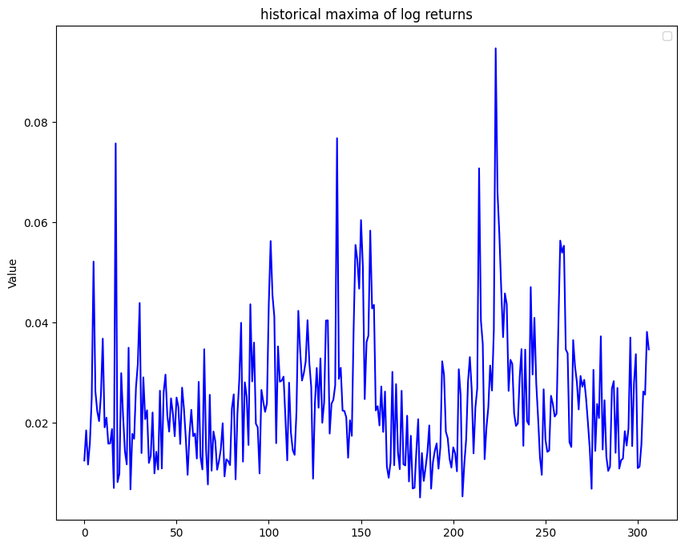
Gumbel Plot
quantiles_theoriques_gumbel = []for i inrange(1,len(maxima_train_sample)+1): val =-np.log(-np.log((i-0.5)/len(maxima_train_sample))) quantiles_theoriques_gumbel.append(val)# Tracer le Gumbel plotplt.figure(figsize=(10, 8))plt.scatter(quantiles_theoriques_gumbel, np.sort(maxima_train_sample), marker='o')plt.title('Gumbel Plot')plt.xlabel('Quantiles théoriques de Gumbel')plt.ylabel('Quantiles observés')plt.show()
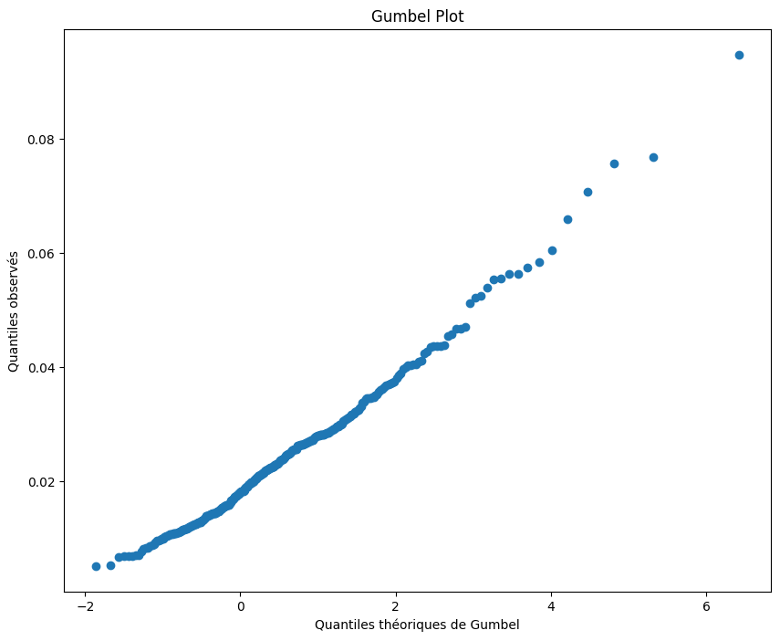
Le Gumbel plot ne semble pas linéaire. Ainsi il semble que \(\xi\) soit non nul. La distribution adaptée à nos données est donc une distribution de Fréchet ou Weibull
from scipy.stats import genextreme as gevfrom scipy.stats import gumbel_rparams_gev = gev.fit(maxima_train_sample)params_gumbel = gumbel_r.fit(maxima_train_sample)# Afficher les paramètres estimésprint("Paramètres estimés de la distribution GEV:")print("Forme (xi) =", params_gev[0])print("Localisation (mu) =", params_gev[1])print("Echelle (sigma) =", params_gev[2])print(150*"-")print("Paramètres estimés de la distribution de Gumbel (xi nul):")print("Localisation (mu) =", params_gumbel[0])print("Echelle (sigma) =", params_gumbel[1])
Paramètres estimés de la distribution GEV:
Forme (xi) = -0.7725395136844684
Localisation (mu) = 0.017131692081872454
Echelle (sigma) = 0.01129503253185405
------------------------------------------------------------------------------------------------------------------------------------------------------
Paramètres estimés de la distribution de Gumbel (xi nul):
Localisation (mu) = 0.01869561313242568
Echelle (sigma) = 0.009313391888439576
plt.figure(figsize=(12, 8))plt.plot(ts_close.index[0:train_size], train_close['log_return'], label="historical train log returns", color ='gray')plt.axvline(x = ts_close.index[train_size-251*10-1], color='green', linestyle='-', label='Limite de données pour le calcul de la VaR')plt.plot(ts_close.index[train_size:], test_close['log_return'], label="historical test log returns", color ='blue')plt.plot(ts_close.index[train_size:], [var_TVE_MB for i inrange(test_size)], label="VaR TVE MB", color ='red')list_exceptions_TVE_MB = [i for i inrange(len(test_close['log_return'])) if test_close['log_return'].iloc[i]<var_TVE_MB]plt.scatter(test_close.index[list_exceptions_TVE_MB], test_close['log_return'].iloc[list_exceptions_TVE_MB], color='red', label='Exceptions')plt.title('CAC40')plt.ylabel('Values')plt.plot()plt.legend()plt.show()
print(f"Le nombre d'exceptions pour la VaR non paramétrique est: {len(list_exceptions_TVE_MB)}")print(f"Le pourcentage d'exceptions pour la VaR non paramétrique est: {len(list_exceptions_TVE_MB)/test_size}")
Le nombre d'exceptions pour la VaR non paramétrique est: 32
Le pourcentage d'exceptions pour la VaR non paramétrique est: 0.014849187935034803
test_except_TVE_MB = stats.binomtest(len(list_exceptions_TVE_MB), test_size, p =0.01)print(f'la p-value du test binomial est: {test_except_TVE_MB.pvalue}')
la p-value du test binomial est: 0.029672279824551718
VAR TVE: Approche Peak over threshold
Fonction pour le Mean Excess Plot
def mean_excess_plot(returns): sorted_returns =np.sort(returns) listeu = np.linspace(np.min(sorted_returns), np.max(sorted_returns), num =1000) listeu = listeu[listeu < np.percentile(listeu, 80)] ## Retirer les valeurs trop extrêmes mean_excess = [] n=len(sorted_returns)for u in listeu:if u >0: terms = [] NU=0for i inrange(n): term = sorted_returns[i]-u terms.append(max(term,0))if term >0: NU = NU +1try: mean_excess.append( (1/NU) * np.sum(terms))except: listeu = listeu[listeu!=u]else: listeu = listeu[listeu!=u] plt.figure(figsize = (10,8)) plt.plot(listeu, mean_excess) plt.title('Mean excess Plot') plt.ylabel('Moyenne des excès empirique') plt.xlabel('Seuils') plt.plot()
Par analyse graphique, nous pouvons garder u = 0.03
Estimation des paramètres de la loi GPD
u =0.03excess_values = [value - u for value in minus_train_returns]
from scipy.stats import genparetoparams_gpd = genpareto.fit(excess_values)# Afficher les paramètres estimésprint("Paramètres estimés de la distribution GPD:")print("Forme (xi) =", params_gpd[0])print("Localisation (mu) =", params_gpd[1])print("Echelle (sigma) =", params_gpd[2])
Paramètres estimés de la distribution GPD:
Forme (xi) = -0.5566487728158849
Localisation (mu) = -0.13594589969927412
Echelle (sigma) = 0.11173378075406212
plt.figure(figsize=(10, 8))plt.scatter(quantiles_theoriques_GDP, quantiles_empiriques_POT)plt.plot(quantiles_theoriques_GDP, quantiles_theoriques_GDP, color='red', linestyle='dashed', linewidth=2, label='Première bissectrice')plt.title("QQ Plot d'une modélisation par loi GPD")plt.xlabel('Quantiles théoriques (Loi GPD)')plt.ylabel('Quantiles empiriques')plt.grid(True)
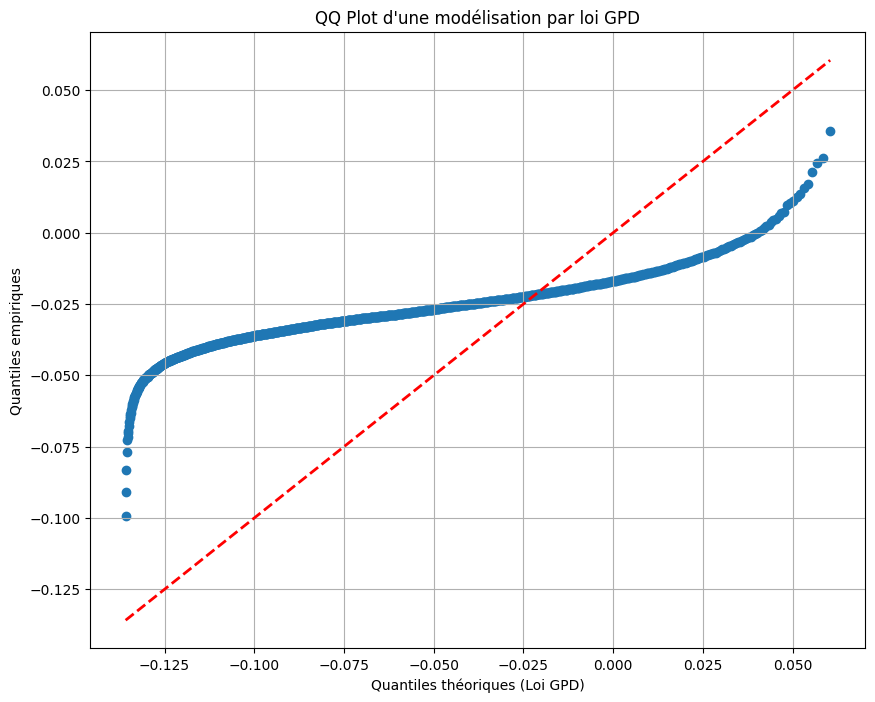
Calcul de la VAR
alpha =0.99NU =len([term for term in minus_train_returns if term-u>0])alpha_pot =1-len(minus_train_returns)*(1-alpha)/NUvar_TVE_POT = genpareto.ppf(alpha_pot, *params_gpd)+uprint("Var : ", np.round(var_TVE_POT, 3))
Var : -0.032
Backtesting
plt.figure(figsize=(12, 8))plt.plot(ts_close.index[0:train_size], train_close['log_return'], label="historical train log returns", color ='gray')plt.axvline(x = ts_close.index[train_size-251*10-1], color='green', linestyle='-', label='Limite de données pour le calcul de la VaR')plt.plot(ts_close.index[train_size:], test_close['log_return'], label="historical test log returns", color ='blue')plt.plot(ts_close.index[train_size:], [var_TVE_POT for i inrange(test_size)], label="VaR TVE POT", color ='red')list_exceptions_TVE_POT = [i for i inrange(len(test_close['log_return'])) if test_close['log_return'].iloc[i]<var_TVE_POT]plt.scatter(test_close.index[list_exceptions_TVE_POT], test_close['log_return'].iloc[list_exceptions_TVE_POT], color='red', label='Exceptions')plt.title('CAC40')plt.ylabel('Values')plt.plot()plt.legend()plt.show()
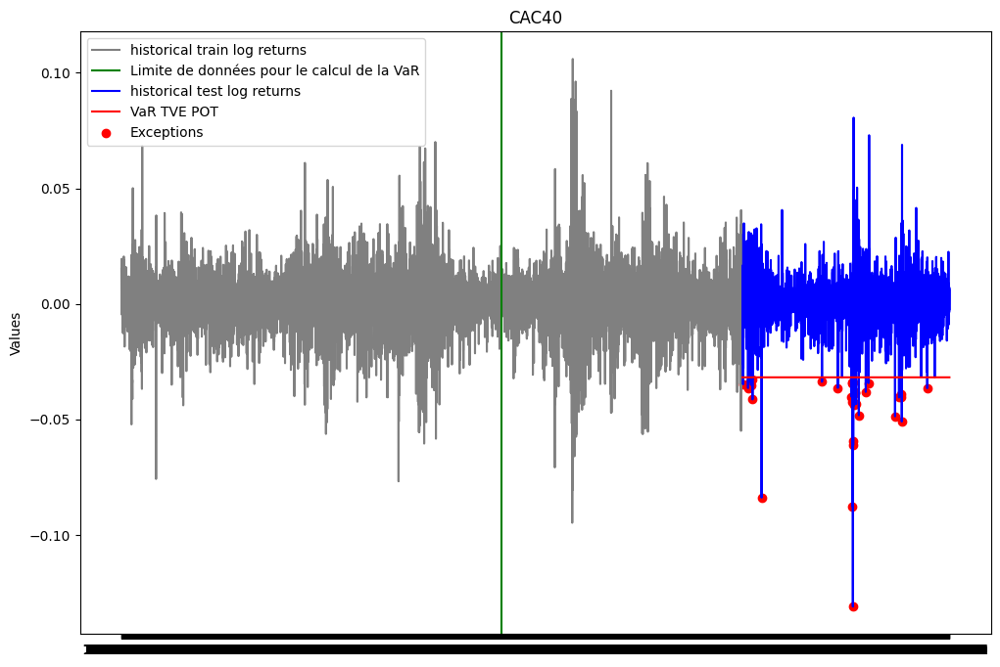
print(f"Le nombre d'exceptions pour la VaR TVE Peak Over Threshold est: {len(list_exceptions_TVE_POT)}")print(f"Le pourcentage d'exceptions pour la VaR TVE Peak Over Threshold est: {len(list_exceptions_TVE_POT)/test_size}")
Le nombre d'exceptions pour la VaR TVE Peak Over Threshold est: 32
Le pourcentage d'exceptions pour la VaR TVE Peak Over Threshold est: 0.014849187935034803
test_except_TVE_POT = stats.binomtest(len(list_exceptions_TVE_POT), test_size, p =0.01)print(f'la p-value du test binomial est: {test_except_TVE_POT.pvalue}')
la p-value du test binomial est: 0.029672279824551718
Calcul de la VaR en utilisant un modèle AR-GARCH
Dans les modélisations précédentes, nous avons supposé que les rendements avaient une moyenne constante au cours du temps, une volatilité constante et qu’elles sont non auto-correlées. Cependant, ces hypothèses ne sont pas vérifiées dans la réalité. En effet, les rendements connaissent des périodes relativement stable et des périodes de volatilité élevée. De plus, les rendements sont auto-corrélés. Pour prendre en compte ces caractéristiques, nous allons modéliser les rendements par un modèle AR-GARCH.
Nous savons déjà que la série des log rendements est stationnaire. De plus les fonctions d’autocorrélation et d’autocorrélation partielle sont exponentielles décroissantes et s’annulent après quelques retards. Cela nous conduit à envisager un modèle AR(p) avec p=1,2,3,4,5,6,7,8,9,10. Nous allons comparer les modèles AR(p) et choisir le modèle qui minimise le BIC.
# Construction des modèles AR(p) for p in [1,2,3,4,5] et choix du modèle avec le plus petit BICfrom statsmodels.tsa.ar_model import AutoRegbic = {}for p inrange(1,6): model = AutoReg(train_close['log_return'],lags=p).fit() bic[p] = model.bicprint(f"le modèle avec le plus petit BIC est le modèle AR({min(bic, key=bic.get)})")
le modèle avec le plus petit BIC est le modèle AR(1)
d:\risque_multiple\mon_env\lib\site-packages\statsmodels\tsa\base\tsa_model.py:473: ValueWarning: A date index has been provided, but it has no associated frequency information and so will be ignored when e.g. forecasting.
self._init_dates(dates, freq)
d:\risque_multiple\mon_env\lib\site-packages\statsmodels\tsa\base\tsa_model.py:473: ValueWarning: A date index has been provided, but it has no associated frequency information and so will be ignored when e.g. forecasting.
self._init_dates(dates, freq)
d:\risque_multiple\mon_env\lib\site-packages\statsmodels\tsa\base\tsa_model.py:473: ValueWarning: A date index has been provided, but it has no associated frequency information and so will be ignored when e.g. forecasting.
self._init_dates(dates, freq)
d:\risque_multiple\mon_env\lib\site-packages\statsmodels\tsa\base\tsa_model.py:473: ValueWarning: A date index has been provided, but it has no associated frequency information and so will be ignored when e.g. forecasting.
self._init_dates(dates, freq)
d:\risque_multiple\mon_env\lib\site-packages\statsmodels\tsa\base\tsa_model.py:473: ValueWarning: A date index has been provided, but it has no associated frequency information and so will be ignored when e.g. forecasting.
self._init_dates(dates, freq)
Le modèle AR(1) est celui qui a le plus petit BIC. Nous maintenant étudier l’adéquation de ce modèle.
Analyse des résidus
Nous allons allons vérifier à l’aide du test de portemanteau si les résidus sont des bruits blancs. Nous utiliserons le test de Ljung-Box. L’hypothèse nulle est qu’il n’existe pas d’autocorrélation dans les résidus.
# Test de Ljung-Box pour les résidus du modèle AR(1)from statsmodels.stats.diagnostic import acorr_ljungboxmodel = AutoReg((train_close['log_return']-np.mean(train_close['log_return'])),lags=1).fit()residus = model.residresult_lyung_box = acorr_ljungbox(residus, lags=10)result_lyung_boxprint(model.summary())
d:\risque_multiple\mon_env\lib\site-packages\statsmodels\tsa\base\tsa_model.py:473: ValueWarning: A date index has been provided, but it has no associated frequency information and so will be ignored when e.g. forecasting.
self._init_dates(dates, freq)
Il est en resort que l’hypothèse nulle du test rejettée pour les 10 premiers lags, ce qui signifie que les résidus sont corrélés. Nous pouvons déjà conclure que le modèle AR(1) n’est pas satisfaisant. L’homoscédasticité des résidus peut être vérifiée aussi à l’aide du test de Portemanteau : en étudiant la corrélation des carrés des résidus. Nous pouvons aussi étudier la normalité des résidus à l’aide du test de Jarque-Bera et du QQ plot.
L’hypothèse nulle qui suppose que les résidus sont homoscédastiques est rejetée. Nous pouvons donc conclure que les résidus ne sont pas homoscédastiques et pensez à un modèle GARCH sur les résidus.
QQ plot des résidus
import matplotlib.pyplot as pltimport statsmodels.api as smsm.qqplot(residus, line ='s')plt.title('residusB Returns - QQ Plot')plt.show()
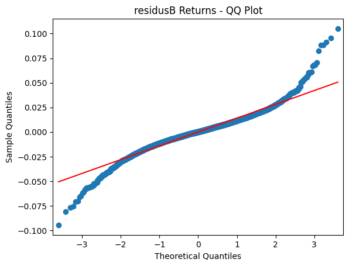
Test de Jarque-Bera
from scipy.stats import jarque_bera# Test de Jarque-Bera pour la normalitéjb_test_statistic, jb_p_value = jarque_bera(residus)print("Jarque-Bera test statistic:", jb_test_statistic)print("Jarque-Bera test p-value:", jb_p_value)
Jarque-Bera test statistic: 5247.415969035655
Jarque-Bera test p-value: 0.0
On peut déjà constater à partir de ce qqplot que les résidus ne suivent pas une loi normale. En effet, les quantiles théoriques et les quantiles empiriques ne sont pas alignés. Nous avons également rejeté l’hypothèse nulle du test de Jarque-Bera.
Nous allons maintenant modéliser le résidus de ce AR(1).
Adéquation du modèle GARCH sur les résidus
Afin de vérifier si le modèle GARCH est adéquat pour les résidus, nous allons ajuster un modèle GARCH(1,1) aux résidus et ensuite nous allons vérifier à partir des résidus au carrée s’il y’a de l’hetéroscedasticité dans les résidus.
from arch import arch_modelfrom statsmodels.graphics.tsaplots import plot_acf, plot_pacf# Fit the GARCH(1,1) model in the résidus and take the squareresidus_garch_model = arch_model(residus, vol='Garch', p=1, q=1).fit(disp='off')residuals_garch = residus_garch_model.residsquared_residuals_garch = residuals_garch**2fig, axes = plt.subplots(1, 3, figsize=(15, 5))plot_acf(squared_residuals_garch, ax=axes[0], title="")plot_pacf(squared_residuals_garch, ax=axes[1], title="")sm.qqplot(squared_residuals_garch, line ='s',ax=axes[2]) plt.show()
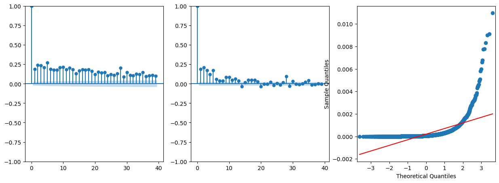
Le graphique ci-dessous confirme la présence d’hetéroscedasticité dans les résidus. Nous pouvons donc conclure que le modèle GARCH est adéquat pour les résidus. Appliquons dons un modèle GARCH(1,1) aux résidus et voyons ses résultats. Nous allons procéder par étape :
Nous allons itérer sur les modèles ARIMA(p,d,q) pour trouver le modèle qui minimise le BIC.
Nous allons prendre le modèle GARCH(p,q) en fonction du modèle ARIMA(p,d,q) qui minimise le BIC.
Appliquer le modèle GARCH(p,q) aux résidus et examiner les résidus du modèle et les résidus du modèle au carré pour vérifier la présence d’hetéroscedasticité.
Avant d’aller plus loin, vérifions statistiquement la présence d’un effet ARCH dans les résidus.
## Test d'un effet ARCH sur les résidusimport statsmodels.api as smarch_test = sm.stats.diagnostic.het_arch(squared_residuals_garch)print(f'ARCH test results:\n')print(f'LM Statistic: {arch_test[0]}')print(f'p-value: {arch_test[1]}')print(f'F Statistic: {arch_test[2]}')print(f'p-value: {arch_test[3]}')
ARCH test results:
LM Statistic: 624.9569659306129
p-value: 7.887973949362182e-128
F Statistic: 69.08045459804893
p-value: 1.2818085014330244e-134
Nous pouvons conclure qu’il y’a un effet ARCH dans les résidus. Nous allons donc appliquer un modèle GARCH(1,1) aux résidus pour capturer la volatilité. L’hypothèse d’homoscédasticité est rejetée. Donc il y’a une présence d’hétéroscédasticit conditionnelle dans les résidus.
Modélisation du GARCH sur les résidus.
Nous allons appliquer un modèle GARCH(1,1) sur les résidus.
Constant Mean - GARCH Model Results
==============================================================================
Dep. Variable: None R-squared: 0.000
Mean Model: Constant Mean Adj. R-squared: 0.000
Vol Model: GARCH Log-Likelihood: 19233.9
Distribution: Normal AIC: -38459.7
Method: Maximum Likelihood BIC: -38432.6
No. Observations: 6462
Date: Sat, Feb 10 2024 Df Residuals: 6461
Time: 12:15:56 Df Model: 1
Mean Model
============================================================================
coef std err t P>|t| 95.0% Conf. Int.
----------------------------------------------------------------------------
mu 3.3553e-04 7.461e-06 44.969 0.000 [3.209e-04,3.502e-04]
Volatility Model
============================================================================
coef std err t P>|t| 95.0% Conf. Int.
----------------------------------------------------------------------------
omega 3.9447e-06 9.286e-12 4.248e+05 0.000 [3.945e-06,3.945e-06]
alpha[1] 0.1000 1.048e-02 9.539 1.442e-21 [7.945e-02, 0.121]
beta[1] 0.8800 8.851e-03 99.420 0.000 [ 0.863, 0.897]
============================================================================
Covariance estimator: robust
Les résultats du modèle GARCH(1,1) se trouvent dans le tableau ci-dessus. Nous pouvons constater que les paramètres sont tous significatifs. Nous allons maintenant vérifier la qualité d’ajustement du modèle GARCH(1,1) aux résidus.
Analyse des résidus du modèle GARCH
La figure ci-dessous représente les différents graphiques : - Le graphique des résidus du modèle GARCH - La volatilité conditionnelle estimée - Le graphique des résidus standardisés
Le résidu dont l’analyse de la blancheur nous intéresse est le résidu standardisé. Il est le résultat du rapport entre le résidu du modèle GARCH et la volatilité conditionnelle estimée. Nous allons donc vérifier si ce résidu est un bruit blanc. C’est ce résidu que nous allons utiliser pour modéliser la VaR.
Vérifions que les résidus de ce modèle GARCH sont des bruits blancs.
Nous allons faire le test de Ljung-Box pour vérifier l’autocorrélation des résidus. Et nous allons également faire ce test sur les carrés des résidus pour vérifier l’absence d’autocorrélation des résidus au carré d’où l’absence d’hetéroscedasticité.
# test de Ljung-Box sur les résidus et les résidus au carrétest_lyungbow = acorr_ljungbox(std_residus, lags=[10], return_df=False)print(test_lyungbow)test_lyungbow_squared = acorr_ljungbox(std_residus**2, lags=[10], return_df=False)print(test_lyungbow_squared)
Dans les deux cas, la p-value est supèrieur à 5%. Nous ne pouvons donc pas rejeter l’hypothèse nulle selon laquelle les résidus sont des bruits blancs. Nous pouvons donc conclure que le modèle GARCH(1,1) est satisfaisant. Nous pouvons faire d’autres tests pour vérifier la qualité de notre modèle tel que le test de Jarque-Bera et le QQ plot.
Les estimations des paramètres du modèle AR(1)-GARCH(1,1) sont significatifs. Nous pouvons donc conclure que le modèle AR(1)-GARCH(1,1) est adéquat pour les log-rendements. Les paramètres estimés sont : - alpha = 0.0858 - beta = 0.8978 - omega = 0.0322 - phi = -0.0092
Estimation des paramètres du modèle AR(1)-GARCH(1,1).
Nous pouvons directement estimer les paramètres du modèle AR(1)-GARCH(1,1) en utilisant la fonction arch_model de la bibliothèque arch. C’est ce que nous allons faire dans la cellule suivante.
## estimation des paramètres du modèle AR(1) -GARCH(1,1)ar_garch_model = arch_model(train_close['log_return'], vol='Garch', p=1, q=1, mean='AR', lags=1).fit(disp='off')print(ar_garch_model.summary())
AR - GARCH Model Results
==============================================================================
Dep. Variable: log_return R-squared: -0.000
Mean Model: AR Adj. R-squared: -0.001
Vol Model: GARCH Log-Likelihood: 19233.9
Distribution: Normal AIC: -38457.7
Method: Maximum Likelihood BIC: -38423.9
No. Observations: 6462
Date: Sat, Feb 10 2024 Df Residuals: 6460
Time: 12:17:23 Df Model: 2
Mean Model
=================================================================================
coef std err t P>|t| 95.0% Conf. Int.
---------------------------------------------------------------------------------
Const 4.7602e-04 2.667e-05 17.851 2.864e-71 [4.238e-04,5.283e-04]
log_return[1] -9.2258e-03 1.310e-02 -0.704 0.481 [-3.490e-02,1.644e-02]
Volatility Model
============================================================================
coef std err t P>|t| 95.0% Conf. Int.
----------------------------------------------------------------------------
omega 3.9447e-06 9.121e-12 4.325e+05 0.000 [3.945e-06,3.945e-06]
alpha[1] 0.1000 1.048e-02 9.544 1.375e-21 [7.946e-02, 0.121]
beta[1] 0.8800 8.849e-03 99.450 0.000 [ 0.863, 0.897]
============================================================================
Covariance estimator: robust
# les paramètres du modèle AR(1)-GARCH(1,1) sont les suivantsprint(f"Les paramètres du modèle AR(1)-GARCH(1,1) sont les suivants:\n{ar_garch_model.params}")constance,phi, omega, alpha, beta = ar_garch_model.params
Les paramètres du modèle AR(1)-GARCH(1,1) sont les suivants:
Const 0.000476
log_return[1] -0.009226
omega 0.000004
alpha[1] 0.100000
beta[1] 0.880000
Name: params, dtype: float64
Les résultats ci-dessus donnent les mêmes résultats que ceux obtenus précédemment. Nous pouvons donc conclure que le modèle AR(1)-GARCH(1,1) est adéquat pour les log-rendements.
Reproduction de la dynamique historique de \(\sigma_t\) et de \(\mu_t\)
import numpy as npdef forcast_mu_sigma(r, phi_hat, omega_hat, alpha_hat, beta_hat):""" Calcule les prévisions de mu et sigma^2 pour une série de log-rendements :param r: Vecteur de log-rendements (numpy array). :param phi_hat: Estimation de phi (float). :param omega_hat: Estimation de omega (float). :param alpha_hat: Estimation de alpha (float). :param beta_hat: Estimation de beta (float). :return: Tuple de numpy arrays (mu_hat, sigma2_hat). """# Initialisation des vecteurs mu_hat et sigma2_hat mu_hat = np.zeros(len(r)) sigma2_hat = np.zeros(len(r))# Initialisation de la première valeur de mu_hat mu_hat[0] = np.mean(r)# Initialisation de la première valeur de sigma2_hat en utilisant la variance long terme sigma2_hat[0] = omega_hat / (1- alpha_hat - beta_hat)# Calcul des valeurs de mu_hat et sigma2_hat en utilisant les formules GARCH(1,1)for t inrange(1, len(r)): mu_hat[t] = mu_hat[0] + phi_hat * r[t-1] sigma2_hat[t] = omega_hat + alpha_hat * (r[t-1] - mu_hat[t-1])**2+ beta_hat * sigma2_hat[t-1]return mu_hat, sigma2_hatconstance,phi, omega, alpha, beta = ar_garch_model.paramsmu_hat, sigma2_hat =forcast_mu_sigma(ts_close['log_return'],ar_garch_model.params['log_return[1]'], ar_garch_model.params['omega'], ar_garch_model.params['alpha[1]'], ar_garch_model.params['beta[1]'])
Une fois que l’on a reproduire la dynamique de \(\sigma_t\) et de \(\mu_t\), nous pouvons faire des représentations graphiques pour vérifier la qualité de cette reproduction. Dans le graphique ci-dessous, nous allons représenter la série de \(\sigma_t\) et de \(\mu_t\) en fonction de la date ainsi que la volatilité conditionnelle estimée par le modèle AR(1)-GARCH(1,1).
fig,axes = plt.subplots(1,3,figsize=(15,5))axes[0].plot( mu_hat, label='Prévision de mu')axes[0].set_title('Prévision de mu')axes[0].legend()axes[1].plot( sigma2_hat, label='Prévision de $\sigma^2$')axes[1].set_title('Prévision de $\sigma^2$')axes[1].legend()axes[2].plot(garch_final_model.conditional_volatility, label='Volatilité conditionnelle')axes[2].set_title('Volatilité conditionnelle')axes[2].legend()
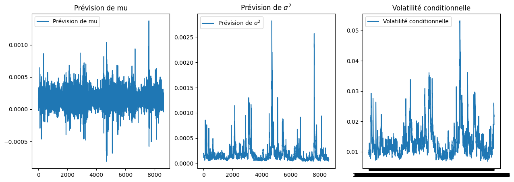
Avant de calculer la VaR dynamique, nous allons estimer le quantile de \(1-\alpha\) des résidus \(\epsilon_t\). Rappelons que notre modèle AR(1)-GARCH(1,1) est donné par :
L’équation du modèle AR(1) pour la moyenne conditionnelle : \[\hat{\mu_t} = \hat{\mu} + \hat{\phi} R_{t-1}\]
L’équation du modèle GARCH(1,1) pour la variance conditionnelle : \[\hat{\sigma_t}^2 = \hat{\omega} + \hat{\alpha} (R_{t-1} - \hat{\mu_t})^2 + \hat{\beta} \hat{\sigma_{t-1}}^2\]
où : - \(\hat{\mu_t}\) est la moyenne conditionnelle au temps \(t\), - \(R_{t-1}\) est le rendement à \(t-1\), - \(\hat{\sigma_t}^2\) est la variance conditionnelle au temps \(t\), - \(\hat{\mu}\), \(\hat{\phi}\), \(\hat{\omega}\), \(\hat{\alpha}\), et \(\hat{\beta}\) sont les paramètres estimés du modèle.
Et enfin le résidu \(\epsilon_t\) est donné par :
\[\epsilon_t = \frac{R_t - \hat{\mu_t}}{\hat{\sigma_t}}\] qui est le résidu standardisé.
Calcul de la VaR sur les résidus standardisés \(\epsilon_t\)
Pour calculer la VaR sur les résidus standardisés, nous allons utiliser pour l’approche non-paramétrique, la VaR historique boostrap et pour la méthode TVE, nous allons utiliser l’approche maxima par bloc.
VaR historique boostrap sur les résidus standardisés et calcul de la VaR dynamique
### VaR historique bootstrap sur les résidus du modèle AR(1)-GARCH(1,1)seuil =0.99seuil_IC =0.9num_simulations =5000n_B =251*10#on utilise 10 ans de données comme taille d'échantillons bootstrapvar_residu_boostrap = VaR_Hist_Bootstrap(std_residus, seuil, num_simulations, seuil_IC, n_B)[0]var_garchdyn_boostrap = (mu_hat + np.sqrt(sigma2_hat) * var_residu_boostrap)
Backtesting
list_exceptions_garchdyn_boot = [i for i inrange(train_size,len(ts_close['log_return'])) if ts_close['log_return'][i]<var_garchdyn_boostrap[i]]len(list_exceptions_garchdyn_boot)
26
print(f"Le nombre d'exceptions pour la VaR GARCH est: {len(list_exceptions_garchdyn_boot)}")print(f"Le pourcentage d'exceptions pour la VaR GARCH est: {len(list_exceptions_garchdyn_boot)/test_size*100.:0.2f}%")
Le nombre d'exceptions pour la VaR GARCH est: 26
Le pourcentage d'exceptions pour la VaR GARCH est: 1.21%
test_except_gaus = stats.binomtest(len(list_exceptions_garchdyn_boot), test_size, p =0.01)print(f'la p-value du test binomial est: {test_except_gaus.pvalue:.2f}')
la p-value du test binomial est: 0.33
La pvalue du test est supérieure au seuil de 5%. On ne peut donc pas rejeter l’hypothèse nulle selon laquelle la probabilité d’exception est de 1%. Nous concluons donc que notre VaR est satisfaisante.
plt.figure(figsize=(12, 8))plt.plot(ts_close.index, ts_close['log_return'], label="historical log returns", color ='blue')plt.plot(ts_close.index[train_size:], var_garchdyn_boostrap[train_size:], label='VaR dynamique', color ='red')plt.axvline(x = ts_close.index[train_size-251*10-1], color='green', linestyle='-', label='Limite de données pour le calcul de la VaR')plt.scatter(ts_close.index[list_exceptions_garchdyn_boot], ts_close['log_return'][list_exceptions_garchdyn_boot], color='red', label='Exceptions')plt.title('CAC40')plt.ylabel('Values')plt.plot()plt.legend()plt.show()
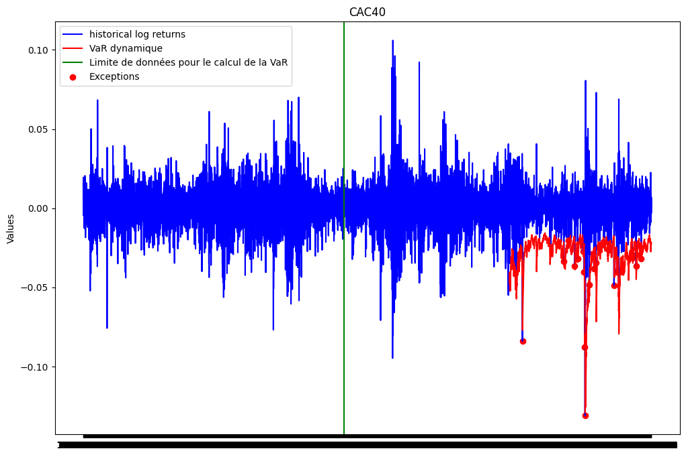
VaR par la méthode maxima par bloc sur les résidus standardisés et calcul de la VaR dynamique
La TVE s’intéressant aux queues de distribution droite, nous allons d’abord convertir les résidus standardisés en prenant l’opposé.
std_residus_minus =-std_residus
std_residus_maxima = construct_max_data(std_residus_minus, 21)plt.figure(figsize=(10, 8))plt.plot(std_residus_maxima ,color ='blue')plt.title("residus maxima ")plt.plot()plt.legend()plt.show()
No artists with labels found to put in legend. Note that artists whose label start with an underscore are ignored when legend() is called with no argument.
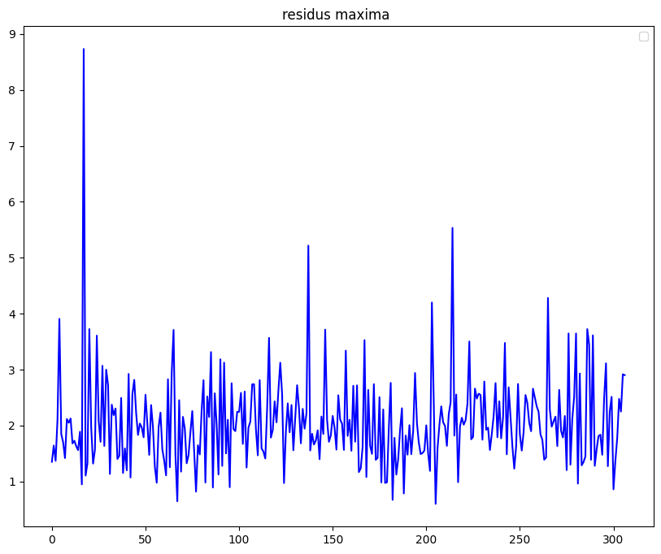
quantiles_theoriques_gumbel_residus = []for i inrange(1,len(std_residus_maxima)+1): val =-np.log(-np.log((i-0.5)/len(std_residus_maxima))) quantiles_theoriques_gumbel_residus.append(val)# Tracer le Gumbel plotplt.figure(figsize=(10, 8))plt.scatter(quantiles_theoriques_gumbel_residus, np.sort(std_residus_maxima), marker='o')# Étape 1 : Calculer les coefficients de la droite d'ajustementcoefficients = np.polyfit(quantiles_theoriques_gumbel_residus, np.sort(std_residus_maxima), 1)# Étape 2 : Générer les valeurs de la droite d'ajustementdroite_ajustement = np.poly1d(coefficients)x = np.array(quantiles_theoriques_gumbel_residus)y_ajustement = droite_ajustement(x)# Étape 3 : Tracer la droite d'ajustementplt.plot(x, y_ajustement, color='red')plt.title('Gumbel Plot')plt.xlabel('Quantiles théoriques de Gumbel')plt.ylabel('Quantiles observés')plt.show()
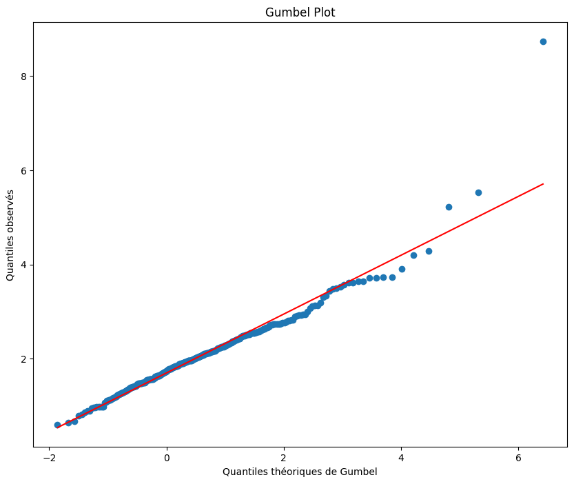
Le gumbel plot semble linéaire et ne présente pas de courbure. Nous allons donc utiliser la loi de Gumbel pour la suite.
from scipy.stats import genextreme as gevfrom scipy.stats import gumbel_rparams_gev_residus = gev.fit(std_residus_maxima)params_gumbel_residus = gumbel_r.fit(std_residus_maxima)# Afficher les paramètres estimésprint("Paramètres estimés de la distribution GEV:")print("Forme (xi) =", params_gev_residus[0])print("Localisation (mu) =", params_gev_residus[1])print("Echelle (sigma) =", params_gev_residus[2])print(150*"-")print("Paramètres estimés de la distribution de Gumbel (xi nul):")print("Localisation (mu) =", params_gumbel_residus[0])print("Echelle (sigma) =", params_gumbel_residus[1])
Paramètres estimés de la distribution GEV:
Forme (xi) = -0.023456008571750273
Localisation (mu) = 1.7068601969202493
Echelle (sigma) = 0.5951776042334704
------------------------------------------------------------------------------------------------------------------------------------------------------
Paramètres estimés de la distribution de Gumbel (xi nul):
Localisation (mu) = 1.7147295823748347
Echelle (sigma) = 0.5991954595342129
plt.figure(figsize=(12, 8))plt.subplot(1, 2, 1)plt.scatter(quantiles_theoriques_GEV_residus, quantiles_empiriques_TVE_residus)plt.plot(quantiles_theoriques_GEV_residus, quantiles_theoriques_GEV_residus, color='red', linestyle='dashed', linewidth=2, label='Première bissectrice')plt.title("QQ Plot d'une modélisation par loi GEV")plt.xlabel('Quantiles théoriques (Loi GEV)')plt.ylabel('Quantiles empiriques')plt.grid(True)plt.subplot(1, 2, 2)plt.scatter(quantiles_theoriques_Gumb_residus, quantiles_empiriques_TVE_residus)plt.plot(quantiles_theoriques_Gumb_residus, quantiles_theoriques_Gumb_residus, color='red', linestyle='dashed', linewidth=2, label='Première bissectrice')plt.title("QQ Plot d'une modélisation par loi Gumbel")plt.xlabel('Quantiles théoriques (Loi Gumbel)')plt.ylabel('Quantiles empiriques')plt.grid(True)plt.tight_layout()plt.show()
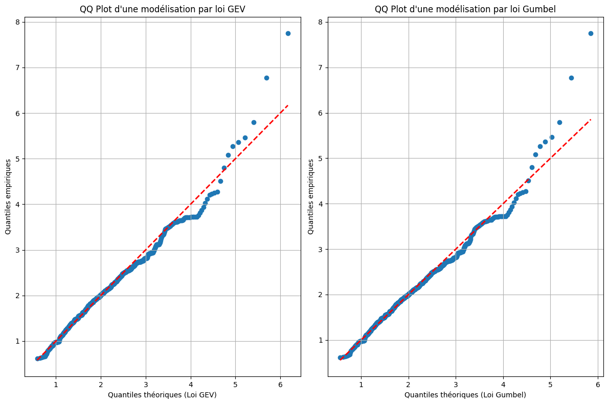
Les deux modélisations semblent bien correspondre aux données. Comme le Gumbel plot est linéaire, nous allons utiliser la loi de Gumbel pour modéliser la GEV et calculer la VaR.
list_exceptions_TVE_residus = [i for i inrange(train_size,len(ts_close['log_return'])) if ts_close['log_return'][i]<var_dyn_TVE_residus[i]]len(list_exceptions_TVE_residus)
25
print(f"Le nombre d'exceptions pour la VaR TVE est: {len(list_exceptions_TVE_residus)}")print(f"Le pourcentage d'exceptions pour la VaR TVE est: {len(list_exceptions_TVE_residus)/test_size*100.:0.2f}%")
Le nombre d'exceptions pour la VaR TVE est: 25
Le pourcentage d'exceptions pour la VaR TVE est: 1.16%
test_except_TVE_residus = stats.binomtest(len(list_exceptions_TVE_residus), test_size, p =0.01)print(f'la p-value du test binomial est: {test_except_TVE_residus.pvalue:.2f}')
la p-value du test binomial est: 0.45
La pvalue du test est supérieure au seuil de 5%. On ne peut donc pas rejeter l’hypothèse nulle selon laquelle la probabilité d’exception est de 1%. Nous concluons donc que notre VaR dynamique est satisfaisante.
plt.figure(figsize=(12, 8))plt.plot(ts_close.index, ts_close['log_return'], label="historical log returns", color ='blue')plt.plot(ts_close.index[train_size:], var_dyn_TVE_residus[train_size:], label='VaR dynamique', color ='red')plt.axvline(x = ts_close.index[train_size-251*10-1], color='green', linestyle='-', label='Limite de données pour le calcul de la VaR')plt.scatter(ts_close.index[list_exceptions_TVE_residus], ts_close['log_return'][list_exceptions_TVE_residus], color='red', label='Exceptions')plt.title('CAC40')plt.ylabel('Values')plt.plot()plt.legend()plt.show()
Conclusion
Ce projet a eu pour objectif d’estimer la VaR à horizon 1 jour et la VaR dynamique de différentes façons. Nous avons utilisé les données historiques du CaC40. Nous avons utilisé des méthodes non-paramétriques telles que la VaR historique et la VaR historique bootstrap. Nous avons également utilisé des méthodes paramétriques telles que la VaR gaussienne, la VaR skew-student et nous avons utilisé la théorie des valeurs extrêmes pour modéliser la VaR. Nous avons également estimé de deux façons différentes la VaR dynamique. La première méthode consiste à calculer la VaR historique sur une fenêtre glissante de 251 jours. La deuxième méthode consiste à modéliser la VaR par un modèle AR-GARCH. Nous avons également validé nos modèles par des tests de backtesting.
Les différentes approches de modélisation estime la VaR à horizon 1 jour à environ -0.03 avec un niveau de confiance de 99%. Ceci signifie que la perte maximale que peut subir un portefeuille sur un horizon de 1 jour avec un niveau de confiance de 99% est de 3%. Nous avons également validé nos modèles par des tests de backtesting qui ne rejettent pas l’hypothèse nulle selon laquelle la probabilité d’exception est de 1%.
La VaR dynamique estimée sur une fenêtre glissante de 251 jours n’a pas été validée par le test de backtesting. En effet, la pvalue du test est inférieure au seuil de 5%. Nous rejetons donc l’hypothèse nulle selon laquelle la probabilité d’exception est de 1%. Cependant, la VaR dynamique estimée par le modèle AR(1)-GARCH(1,1) donne des meilleurs résultats. L’hypothèse nulle du test selon laquelle le pourcentage d’exceptions est inférieur à 1% n’a pas été rejetée.